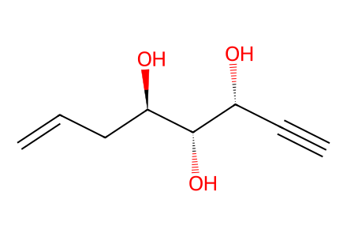
C#C[C@@H](O)[C@H](O)[C@H](O)CC=CThis article prepares spiroketal fragment A (28), original and revised central fragments B/B-prime and structure-validation derivatives. Target-level assembly and southern fragment C are in an accompanying article, not supplied here. All generated structures are candidates pending independent source review. Available SI preparations covered, with explicitly unidentified minor isomers/deprotected byproducts and omitted analogue procedures retained as unresolved boundaries. Provisional mechanistic drawings20/59 are labelled distinctly from isolated compounds. Facts compiled deterministically; independent review pending.
完整 JSON · 逐步 CSV · 路线序列 · SDF · HRMS 核对
| 事件 | 分子连接 | 报告产率 | Canonical reaction SMILES |
|---|---|---|---|
| A01 | D-ribose → 2 | 2: 100% | OC[C@H]1OC(O)[C@H](O)[C@@H]1O>>CC1(C)O[C@@H]2[C@@H](CO)OC(O)[C@@H]2O1 |
| A02 | 2 + 6 → 3 | 3: 47% | CC1(C)O[C@@H]2[C@@H](CO)OC(O)[C@@H]2O1.COP(=O)(OC)C(=[N+]=[N-])C(C)=O>>C#C[C@H]1OC(C)(C)O[C@@H]1[C@H](O)CO |
| A03 | 2 + trityl-chloride → 4 | 4: 77% | CC1(C)O[C@@H]2[C@@H](CO)OC(O)[C@@H]2O1.ClC(c1ccccc1)(c1ccccc1)c1ccccc1>>CC1(C)O[C@@H]2[C@@H](COC(c3ccccc3)(c3ccccc3)c3ccccc3)OC(O)[C@@H]2O1 |
| A04 | 4 + 6 → 5 | 5: 83% | CC1(C)O[C@@H]2[C@@H](COC(c3ccccc3)(c3ccccc3)c3ccccc3)OC(O)[C@@H]2O1.COP(=O)(OC)C(=[N+]=[N-])C(C)=O>>C#C[C@H]1OC(C)(C)O[C@@H]1[C@H](O)COC(c1ccccc1)(c1ccccc1)c1ccccc1 |
| A05 | 5 → 3 | 3: 82% | C#C[C@H]1OC(C)(C)O[C@@H]1[C@H](O)COC(c1ccccc1)(c1ccccc1)c1ccccc1>>C#C[C@H]1OC(C)(C)O[C@@H]1[C@H](O)CO |
| A06 | 3 → 7 | 7: 88% | C#C[C@H]1OC(C)(C)O[C@@H]1[C@H](O)CO>>C#C[C@H]1OC(C)(C)O[C@@H]1[C@H]1CO1 |
| A07 | 7 + vinylmagnesium-bromide → S1 | S1: 98% | C#C[C@H]1OC(C)(C)O[C@@H]1[C@H]1CO1.[Br-].[CH-]=C.[Mg+2]>>C#C[C@H]1OC(C)(C)O[C@@H]1[C@H](O)CC=C |
| A08 | S1 + benzyl-bromide → 8 | 8: 89% | BrCc1ccccc1.C#C[C@H]1OC(C)(C)O[C@@H]1[C@H](O)CC=C>>C#C[C@H]1OC(C)(C)O[C@@H]1[C@@H](CC=C)OCc1ccccc1 |
| A09 | 8 → 9 | not reported | C#C[C@H]1OC(C)(C)O[C@@H]1[C@@H](CC=C)OCc1ccccc1>>C#C[C@@H](O)[C@H](O)[C@H](O)CC=C |
| A10 | 9 + benzoyl-chloride → S2 | not reported | C#C[C@@H](O)[C@H](O)[C@H](O)CC=C.O=C(Cl)c1ccccc1>>C#C[C@@H](OC(=O)c1ccccc1)[C@H](OC(=O)c1ccccc1)[C@@H](CC=C)OCc1ccccc1 |
| A11 | S2 → S3 | S3: 76% | C#C[C@@H](OC(=O)c1ccccc1)[C@H](OC(=O)c1ccccc1)[C@@H](CC=C)OCc1ccccc1>>C#C[C@@H](OC(=O)c1ccccc1)[C@H](OC(=O)c1ccccc1)[C@H](O)CC=C |
| A12 | S3 → 10 | 10: 88% | C#C[C@@H](OC(=O)c1ccccc1)[C@H](OC(=O)c1ccccc1)[C@H](O)CC=C>>C#C[C@@H](OC(=O)c1ccccc1)[C@H](OC(=O)c1ccccc1)[C@@H](CC=C)O[Si](CC)(CC)CC |
| A13 | S1 + benzoyl-chloride → S4 | S4: 95% | C#C[C@H]1OC(C)(C)O[C@@H]1[C@H](O)CC=C.O=C(Cl)c1ccccc1>>C#C[C@H]1OC(C)(C)O[C@@H]1[C@@H](CC=C)OC(=O)c1ccccc1 |
| A14 | S4 → S5 | S5: 94% | C#C[C@H]1OC(C)(C)O[C@@H]1[C@@H](CC=C)OC(=O)c1ccccc1>>C#C[C@@H](O)[C@H](O)[C@@H](CC=C)OC(=O)c1ccccc1 |
| A15 | S5 → 11 | 11: 93% | C#C[C@@H](O)[C@H](O)[C@@H](CC=C)OC(=O)c1ccccc1>>C#C[C@@H](O[Si](C)(C)C(C)(C)C)[C@H](O[Si](C)(C)C(C)(C)C)[C@@H](CC=C)OC(=O)c1ccccc1 |
| A16 | L-aspartic-acid → 13 | 13: 88% | N[C@@H](CC(=O)O)C(=O)O>>O=C(O)C[C@H](Br)C(=O)O |
| A17 | 13 → S7 | S7: 94% | O=C(O)C[C@H](Br)C(=O)O>>OCC[C@H](Br)CO |
| A18 | PMB-alcohol → PMB-bromide | PMB-bromide: 100% | COc1ccc(CO)cc1>>COc1ccc(CBr)cc1 |
| A19 | S7 + PMB-bromide → 14 | 14: 89% | COc1ccc(CBr)cc1.OCC[C@H](Br)CO>>COc1ccc(COCC[C@@H]2CO2)cc1 |
| A20 | 2,3-dibromopropene → S8 | S8: 75% | C=C(Br)CBr>>C=C(Br)C[Si](C)(C)C |
| A21 | S8 → 15 | not reported | C=C(Br)C[Si](C)(C)C>>C=[C-]C[Si](C)(C)C.[Br-].[Mg+2] |
| A22 | 14 + 15 → 16 | 16: 93% | C=[C-]C[Si](C)(C)C.COc1ccc(COCC[C@@H]2CO2)cc1.[Br-].[Mg+2]>>C=C(C[C@H](O)CCOCc1ccc(OC)cc1)C[Si](C)(C)C |
| A23 | 16 → 17 | 17: 85% | C=C(C[C@H](O)CCOCc1ccc(OC)cc1)C[Si](C)(C)C>>C=C(CBr)C[C@H](O)CCOCc1ccc(OC)cc1 |
| A24 | 11 + 17 → S9 | S9: 94% | C#C[C@@H](O[Si](C)(C)C(C)(C)C)[C@H](O[Si](C)(C)C(C)(C)C)[C@@H](CC=C)OC(=O)c1ccccc1.C=C(CBr)C[C@H](O)CCOCc1ccc(OC)cc1>>C=CC[C@@H](OC(=O)c1ccccc1)[C@@H](O[Si](C)(C)C(C)(C)C)[C@@H](C#CCC(=C)C[C@H](O)CCOCc1ccc(OC)cc1)O[Si](C)(C)C(C)(C)C |
| A25 | S9 → 18 | 18: 97% | C=CC[C@@H](OC(=O)c1ccccc1)[C@@H](O[Si](C)(C)C(C)(C)C)[C@@H](C#CCC(=C)C[C@H](O)CCOCc1ccc(OC)cc1)O[Si](C)(C)C(C)(C)C>>C=CC[C@@H](O)[C@@H](O[Si](C)(C)C(C)(C)C)[C@@H](C#CCC(=C)C[C@H](O)CCOCc1ccc(OC)cc1)O[Si](C)(C)C(C)(C)C |
| A26 | 18 → 21 | 21: 80% | C=CC[C@@H](O)[C@@H](O[Si](C)(C)C(C)(C)C)[C@@H](C#CCC(=C)C[C@H](O)CCOCc1ccc(OC)cc1)O[Si](C)(C)C(C)(C)C>>C=CC[C@H]1O[C@@]2(CCC(=C)C[C@@H](CCOCc3ccc(OC)cc3)O2)[C@@H](O[Si](C)(C)C(C)(C)C)[C@@H]1O[Si](C)(C)C(C)(C)C |
| A27 | 19 → 21 | 21: 70% | C=CC[C@@H](OC1CCCCO1)[C@@H](O[Si](C)(C)C(C)(C)C)[C@@H](C#CCC(=C)C[C@H](O)CCOCc1ccc(OC)cc1)O[Si](C)(C)C(C)(C)C>>C=CC[C@H]1O[C@@]2(CCC(=C)C[C@@H](CCOCc3ccc(OC)cc3)O2)[C@@H](O[Si](C)(C)C(C)(C)C)[C@@H]1O[Si](C)(C)C(C)(C)C |
| A28 | 10 + 17 → 22 | 22: 82% | C#C[C@@H](OC(=O)c1ccccc1)[C@H](OC(=O)c1ccccc1)[C@@H](CC=C)O[Si](CC)(CC)CC.C=C(CBr)C[C@H](O)CCOCc1ccc(OC)cc1>>C=CC[C@@H](O)[C@@H](OC(=O)c1ccccc1)[C@@H](C#CCC(=C)C[C@H](O)CCOCc1ccc(OC)cc1)OC(=O)c1ccccc1 |
| A29 | 22 → 23 + 8-epi-23 | 23: 76%; 8-epi-23: 9% | C=CC[C@@H](O)[C@@H](OC(=O)c1ccccc1)[C@@H](C#CCC(=C)C[C@H](O)CCOCc1ccc(OC)cc1)OC(=O)c1ccccc1>>C=CC[C@H]1O[C@@]2(CC(=C)C[C@@H](CCOCc3ccc(OC)cc3)O2)C[C@@H](OC(=O)c2ccccc2)[C@@H]1OC(=O)c1ccccc1.C=CC[C@H]1O[C@]2(CC(=C)C[C@@H](CCOCc3ccc(OC)cc3)O2)C[C@@H](OC(=O)c2ccccc2)[C@@H]1OC(=O)c1ccccc1 |
| A30 | 22 → 23 + 8-epi-23 | not reported | C=CC[C@@H](O)[C@@H](OC(=O)c1ccccc1)[C@@H](C#CCC(=C)C[C@H](O)CCOCc1ccc(OC)cc1)OC(=O)c1ccccc1>>C=CC[C@H]1O[C@@]2(CC(=C)C[C@@H](CCOCc3ccc(OC)cc3)O2)C[C@@H](OC(=O)c2ccccc2)[C@@H]1OC(=O)c1ccccc1.C=CC[C@H]1O[C@]2(CC(=C)C[C@@H](CCOCc3ccc(OC)cc3)O2)C[C@@H](OC(=O)c2ccccc2)[C@@H]1OC(=O)c1ccccc1 |
| A31 | 23 → 24 | 24: 81% | C=CC[C@H]1O[C@@]2(CC(=C)C[C@@H](CCOCc3ccc(OC)cc3)O2)C[C@@H](OC(=O)c2ccccc2)[C@@H]1OC(=O)c1ccccc1>>C=C1C[C@@H](CCOCc2ccc(OC)cc2)O[C@]2(C1)C[C@@H](OC(=O)c1ccccc1)[C@H](OC(=O)c1ccccc1)[C@@H](C[C@H](O)CO)O2 |
| A32 | 24 → S10-PMB | not reported | C=C1C[C@@H](CCOCc2ccc(OC)cc2)O[C@]2(C1)C[C@@H](OC(=O)c1ccccc1)[C@H](OC(=O)c1ccccc1)[C@@H](C[C@H](O)CO)O2>>C=C1C[C@@H](CCOCc2ccc(OC)cc2)O[C@]2(C1)C[C@@H](OC(=O)c1ccccc1)[C@H](OC(=O)c1ccccc1)[C@@H](C[C@@H](CO[Si](C)(C)C(C)(C)C)O[Si](C)(C)C(C)(C)C)O2 |
| A33 | S10-PMB → S10 | not reported | C=C1C[C@@H](CCOCc2ccc(OC)cc2)O[C@]2(C1)C[C@@H](OC(=O)c1ccccc1)[C@H](OC(=O)c1ccccc1)[C@@H](C[C@@H](CO[Si](C)(C)C(C)(C)C)O[Si](C)(C)C(C)(C)C)O2>>C=C1C[C@@H](CCO)O[C@]2(C1)C[C@@H](OC(=O)c1ccccc1)[C@H](OC(=O)c1ccccc1)[C@@H](C[C@@H](CO[Si](C)(C)C(C)(C)C)O[Si](C)(C)C(C)(C)C)O2 |
| A34 | S10 → 25 | 25: 90% | C=C1C[C@@H](CCO)O[C@]2(C1)C[C@@H](OC(=O)c1ccccc1)[C@H](OC(=O)c1ccccc1)[C@@H](C[C@@H](CO[Si](C)(C)C(C)(C)C)O[Si](C)(C)C(C)(C)C)O2>>C=C1C[C@@H](CC=O)O[C@]2(C1)C[C@@H](OC(=O)c1ccccc1)[C@H](OC(=O)c1ccccc1)[C@@H](C[C@@H](CO[Si](C)(C)C(C)(C)C)O[Si](C)(C)C(C)(C)C)O2 |
| A35 | 25 + 26 → 28 | 28: 71% | C=C1C[C@@H](CC=O)O[C@]2(C1)C[C@@H](OC(=O)c1ccccc1)[C@H](OC(=O)c1ccccc1)[C@@H](C[C@@H](CO[Si](C)(C)C(C)(C)C)O[Si](C)(C)C(C)(C)C)O2.C=C=[CH][Sn]([CH2]CCC)([CH2]CCC)[CH2]CCC>>C=C1C[C@@H](C[C@@H](O)C/C=[CH]/[Sn]([CH2]CCC)([CH2]CCC)[CH2]CCC)O[C@]2(C1)C[C@@H](OC(=O)c1ccccc1)[C@H](OC(=O)c1ccccc1)[C@@H](C[C@@H](CO[Si](C)(C)C(C)(C)C)O[Si](C)(C)C(C)(C)C)O2 |
| A36 | 28 → 28a | not reported | C=C1C[C@@H](C[C@@H](O)C/C=[CH]/[Sn]([CH2]CCC)([CH2]CCC)[CH2]CCC)O[C@]2(C1)C[C@@H](OC(=O)c1ccccc1)[C@H](OC(=O)c1ccccc1)[C@@H](C[C@@H](CO[Si](C)(C)C(C)(C)C)O[Si](C)(C)C(C)(C)C)O2>>C=CC[C@H](O)C[C@@H]1CC(=C)C[C@]2(C[C@@H](OC(=O)c3ccccc3)[C@H](OC(=O)c3ccccc3)[C@@H](C[C@@H](CO[Si](C)(C)C(C)(C)C)O[Si](C)(C)C(C)(C)C)O2)O1 |
| A37 | 28 → 29a | 29a: 68% | C=C1C[C@@H](C[C@@H](O)C/C=[CH]/[Sn]([CH2]CCC)([CH2]CCC)[CH2]CCC)O[C@]2(C1)C[C@@H](OC(=O)c1ccccc1)[C@H](OC(=O)c1ccccc1)[C@@H](C[C@@H](CO[Si](C)(C)C(C)(C)C)O[Si](C)(C)C(C)(C)C)O2>>C=CC[C@H](O)C[C@@H]1CC(=C)C[C@]2(C[C@@H](O)[C@H](O)[C@@H](C[C@H](O)CO)O2)O1 |
| A38 | 29a → 29 | 29: 52% | C=CC[C@H](O)C[C@@H]1CC(=C)C[C@]2(C[C@@H](O)[C@H](O)[C@@H](C[C@H](O)CO)O2)O1>>OCC[C@H](O)C[C@@H]1C[C@@H](O)C[C@]2(C[C@@H](O)[C@H](O)[C@@H](C[C@H](O)CO)O2)O1 |
| B01 | 31 + vinylmagnesium-bromide → 32 | not reported | [Br-].[CH-]=C.[Mg+2].c1ccc(COC[C@H]2CO2)cc1>>C=CC[C@H](O)COCc1ccccc1 |
| B02 | 32 + methyl-acrylate → S11 | not reported | C=CC(=O)OC.C=CC[C@H](O)COCc1ccccc1>>COC(=O)/C=C/C[C@H](O)COCc1ccccc1 |
| B03 | S11 → 33 | 33: 99% | COC(=O)/C=C/C[C@H](O)COCc1ccccc1>>COC(=O)/C=C/C[C@@H](COCc1ccccc1)OS(C)(=O)=O |
| B04 | 33 → 34 | not reported | COC(=O)/C=C/C[C@@H](COCc1ccccc1)OS(C)(=O)=O>>COC(=O)[C@H](O)[C@H](O)C[C@@H](COCc1ccccc1)OS(C)(=O)=O |
| B05 | 34 → S12 | not reported | COC(=O)[C@H](O)[C@H](O)C[C@@H](COCc1ccccc1)OS(C)(=O)=O>>COC(=O)[C@@H]1O[C@@H](COCc2ccccc2)C[C@H]1O |
| B06 | S12 → 35 | 35: 100% | COC(=O)[C@@H]1O[C@@H](COCc2ccccc2)C[C@H]1O>>COC(=O)[C@@H]1O[C@@H](COCc2ccccc2)C[C@H]1O[Si](C)(C)C(C)(C)C |
| B07 | 35 → S13 + S14 | S13: 40%; S14: 60% | COC(=O)[C@@H]1O[C@@H](COCc2ccccc2)C[C@H]1O[Si](C)(C)C(C)(C)C>>COC(=O)[C@@H]1O[C@@H](CO)C[C@H]1O.COC(=O)[C@@H]1O[C@@H](CO)C[C@H]1O[Si](C)(C)C(C)(C)C |
| B08 | 35 → 36 | not reported | COC(=O)[C@@H]1O[C@@H](COCc2ccccc2)C[C@H]1O[Si](C)(C)C(C)(C)C>>CC(C)(C)[Si](C)(C)O[C@@H]1C[C@H](COCc2ccccc2)O[C@H]1C=O |
| B09 | 36 + 6 → 37 | not reported | CC(C)(C)[Si](C)(C)O[C@@H]1C[C@H](COCc2ccccc2)O[C@H]1C=O.COP(=O)(OC)C(=[N+]=[N-])C(C)=O>>C#C[C@@H]1O[C@@H](COCc2ccccc2)C[C@H]1O[Si](C)(C)C(C)(C)C |
| B10 | 36 + methoxycarbonylmethylene-triphenylphosphorane → 38-E + 38-Z | not reported | CC(C)(C)[Si](C)(C)O[C@@H]1C[C@H](COCc2ccccc2)O[C@H]1C=O.COC(=O)C=P(c1ccccc1)(c1ccccc1)c1ccccc1>>COC(=O)/C=C/[C@@H]1O[C@@H](COCc2ccccc2)C[C@H]1O[Si](C)(C)C(C)(C)C.COC(=O)/C=C\[C@@H]1O[C@@H](COCc2ccccc2)C[C@H]1O[Si](C)(C)C(C)(C)C |
| B11 | 38-E + 38-Z → S15 | S15: 94% | COC(=O)/C=C/[C@@H]1O[C@@H](COCc2ccccc2)C[C@H]1O[Si](C)(C)C(C)(C)C.COC(=O)/C=C\[C@@H]1O[C@@H](COCc2ccccc2)C[C@H]1O[Si](C)(C)C(C)(C)C>>COC(=O)CC[C@@H]1O[C@@H](CO)C[C@H]1O[Si](C)(C)C(C)(C)C |
| B12 | S15 → S15-aldehyde | not reported | COC(=O)CC[C@@H]1O[C@@H](CO)C[C@H]1O[Si](C)(C)C(C)(C)C>>COC(=O)CC[C@@H]1O[C@@H](C=O)C[C@H]1O[Si](C)(C)C(C)(C)C |
| B13 | S15-aldehyde + iodomethyltriphenylphosphonium-iodide → 39 | not reported | COC(=O)CC[C@@H]1O[C@@H](C=O)C[C@H]1O[Si](C)(C)C(C)(C)C.IC[P+](c1ccccc1)(c1ccccc1)c1ccccc1.[I-]>>COC(=O)CC[C@@H]1O[C@@H](/C=C\I)C[C@H]1O[Si](C)(C)C(C)(C)C |
| B14 | 39 + 37 → 40 | 40: 93% | C#C[C@@H]1O[C@@H](COCc2ccccc2)C[C@H]1O[Si](C)(C)C(C)(C)C.COC(=O)CC[C@@H]1O[C@@H](/C=C\I)C[C@H]1O[Si](C)(C)C(C)(C)C>>COC(=O)CC[C@@H]1O[C@@H](/C=C\C#C[C@@H]2O[C@@H](COCc3ccccc3)C[C@H]2O[Si](C)(C)C(C)(C)C)C[C@H]1O[Si](C)(C)C(C)(C)C |
| B15 | 36 + methylene-triphenylphosphorane → 42 | not reported | C=P(c1ccccc1)(c1ccccc1)c1ccccc1.CC(C)(C)[Si](C)(C)O[C@@H]1C[C@H](COCc2ccccc2)O[C@H]1C=O>>C=C[C@@H]1O[C@@H](COCc2ccccc2)C[C@H]1O[Si](C)(C)C(C)(C)C |
| B16 | 42 + 39 → 43 | 43: 96% | C=C[C@@H]1O[C@@H](COCc2ccccc2)C[C@H]1O[Si](C)(C)C(C)(C)C.COC(=O)CC[C@@H]1O[C@@H](/C=C\I)C[C@H]1O[Si](C)(C)C(C)(C)C>>COC(=O)CC[C@@H]1O[C@@H](/C=C\CC[C@@H]2O[C@@H](COCc3ccccc3)C[C@H]2O[Si](C)(C)C(C)(C)C)C[C@H]1O[Si](C)(C)C(C)(C)C |
| B17 | 43 → 44 | not reported | COC(=O)CC[C@@H]1O[C@@H](/C=C\CC[C@@H]2O[C@@H](COCc3ccccc3)C[C@H]2O[Si](C)(C)C(C)(C)C)C[C@H]1O[Si](C)(C)C(C)(C)C>>COC(=O)CC[C@H](O[Si](C)(C)C(C)(C)C)[C@@H](CCCCCC[C@@H]1O[C@@H](CO[Si](C)(C)C(C)(C)C)C[C@H]1O[Si](C)(C)C(C)(C)C)O[Si](C)(C)C(C)(C)C |
| B18 | 43 → 45 | not reported | COC(=O)CC[C@@H]1O[C@@H](/C=C\CC[C@@H]2O[C@@H](COCc3ccccc3)C[C@H]2O[Si](C)(C)C(C)(C)C)C[C@H]1O[Si](C)(C)C(C)(C)C>>COC(=O)CC[C@@H]1O[C@@H](CCCC[C@@H]2O[C@@H](COCc3ccccc3)C[C@H]2O[Si](C)(C)C(C)(C)C)C[C@H]1O[Si](C)(C)C(C)(C)C |
| B19 | 45 → 41 | not reported | COC(=O)CC[C@@H]1O[C@@H](CCCC[C@@H]2O[C@@H](COCc3ccccc3)C[C@H]2O[Si](C)(C)C(C)(C)C)C[C@H]1O[Si](C)(C)C(C)(C)C>>COC(=O)CC[C@@H]1O[C@@H](CCCC[C@@H]2O[C@@H](CO)C[C@H]2O[Si](C)(C)C(C)(C)C)C[C@H]1O[Si](C)(C)C(C)(C)C |
| B20 | 41 → 41-mesylate | not reported | COC(=O)CC[C@@H]1O[C@@H](CCCC[C@@H]2O[C@@H](CO)C[C@H]2O[Si](C)(C)C(C)(C)C)C[C@H]1O[Si](C)(C)C(C)(C)C>>COC(=O)CC[C@@H]1O[C@@H](CCCC[C@@H]2O[C@@H](COS(C)(=O)=O)C[C@H]2O[Si](C)(C)C(C)(C)C)C[C@H]1O[Si](C)(C)C(C)(C)C |
| B21 | 41-mesylate → 46 | not reported | COC(=O)CC[C@@H]1O[C@@H](CCCC[C@@H]2O[C@@H](COS(C)(=O)=O)C[C@H]2O[Si](C)(C)C(C)(C)C)C[C@H]1O[Si](C)(C)C(C)(C)C>>COC(=O)CC[C@@H]1O[C@@H](CCCC[C@@H]2O[C@@H](CN=[N+]=[N-])C[C@H]2O[Si](C)(C)C(C)(C)C)C[C@H]1O[Si](C)(C)C(C)(C)C |
| B22 | 46 → S16 | S16: 90% | COC(=O)CC[C@@H]1O[C@@H](CCCC[C@@H]2O[C@@H](CN=[N+]=[N-])C[C@H]2O[Si](C)(C)C(C)(C)C)C[C@H]1O[Si](C)(C)C(C)(C)C>>COC(=O)CC[C@@H]1O[C@@H](CCCC[C@@H]2O[C@@H](CNC(C)=O)C[C@H]2O[Si](C)(C)C(C)(C)C)C[C@H]1O[Si](C)(C)C(C)(C)C |
| B23 | S16 → 47 | 47: 84% | COC(=O)CC[C@@H]1O[C@@H](CCCC[C@@H]2O[C@@H](CNC(C)=O)C[C@H]2O[Si](C)(C)C(C)(C)C)C[C@H]1O[Si](C)(C)C(C)(C)C>>COC(=O)CC[C@@H]1O[C@@H](CCCC[C@@H]2O[C@@H](CN(N=O)C(C)=O)C[C@H]2O[Si](C)(C)C(C)(C)C)C[C@H]1O[Si](C)(C)C(C)(C)C |
| B24 | 36 + iodomethyltriphenylphosphonium-iodide → S17 | not reported | CC(C)(C)[Si](C)(C)O[C@@H]1C[C@H](COCc2ccccc2)O[C@H]1C=O.IC[P+](c1ccccc1)(c1ccccc1)c1ccccc1.[I-]>>CC(C)(C)[Si](C)(C)O[C@@H]1C[C@H](COCc2ccccc2)O[C@H]1/C=C\I |
| B25 | S15-aldehyde + methylene-triphenylphosphorane → S18 | not reported | C=P(c1ccccc1)(c1ccccc1)c1ccccc1.COC(=O)CC[C@@H]1O[C@@H](C=O)C[C@H]1O[Si](C)(C)C(C)(C)C>>C=C[C@H]1C[C@@H](O[Si](C)(C)C(C)(C)C)[C@H](CCC(=O)OC)O1 |
| B26 | S18 + S17 → S19 | S19: 95% | C=C[C@H]1C[C@@H](O[Si](C)(C)C(C)(C)C)[C@H](CCC(=O)OC)O1.CC(C)(C)[Si](C)(C)O[C@@H]1C[C@H](COCc2ccccc2)O[C@H]1/C=C\I>>COC(=O)CC[C@@H]1O[C@@H](CC/C=C\[C@@H]2O[C@@H](COCc3ccccc3)C[C@H]2O[Si](C)(C)C(C)(C)C)C[C@H]1O[Si](C)(C)C(C)(C)C |
| B27 | S19 → 41 | 41: 76% | COC(=O)CC[C@@H]1O[C@@H](CC/C=C\[C@@H]2O[C@@H](COCc3ccccc3)C[C@H]2O[Si](C)(C)C(C)(C)C)C[C@H]1O[Si](C)(C)C(C)(C)C>>COC(=O)CC[C@@H]1O[C@@H](CCCC[C@@H]2O[C@@H](CO)C[C@H]2O[Si](C)(C)C(C)(C)C)C[C@H]1O[Si](C)(C)C(C)(C)C |
| C01 | tri-O-acetyl-D-glucal → 48 | 48: 97% | CC(=O)OC[C@H]1OC=C[C@@H](OC(C)=O)[C@@H]1OC(C)=O>>CC(C)(C)[Si](C)(C)OC[C@H]1OC=C[C@@H](O[Si](C)(C)C(C)(C)C)[C@@H]1O[Si](C)(C)C(C)(C)C |
| C02 | 48 → 49 | not reported | CC(C)(C)[Si](C)(C)OC[C@H]1OC=C[C@@H](O[Si](C)(C)C(C)(C)C)[C@@H]1O[Si](C)(C)C(C)(C)C>>CC(C)(C)[Si](C)(C)OC[C@H]1OC(Cl)C[C@@H](O[Si](C)(C)C(C)(C)C)[C@@H]1O[Si](C)(C)C(C)(C)C |
| C03 | 49 + Mander-reagent → 50 | not reported | CC(C)(C)[Si](C)(C)OC[C@H]1OC(Cl)C[C@@H](O[Si](C)(C)C(C)(C)C)[C@@H]1O[Si](C)(C)C(C)(C)C.COC(=O)C#N>>COC(=O)[C@@H]1C[C@@H](O[Si](C)(C)C(C)(C)C)[C@H](O[Si](C)(C)C(C)(C)C)[C@@H](CO)O1 |
| C04 | allyl-alcohol + MOM-chloride → 51 | 51: 62% | C=CCO.COCCl>>C=CCOCOC |
| C05 | 50 → 50-aldehyde | not reported | COC(=O)[C@@H]1C[C@@H](O[Si](C)(C)C(C)(C)C)[C@H](O[Si](C)(C)C(C)(C)C)[C@@H](CO)O1>>COC(=O)[C@@H]1C[C@@H](O[Si](C)(C)C(C)(C)C)[C@H](O[Si](C)(C)C(C)(C)C)[C@@H](C=O)O1 |
| C06 | 50-aldehyde + 51 → 52 | not reported | C=CCOCOC.COC(=O)[C@@H]1C[C@@H](O[Si](C)(C)C(C)(C)C)[C@H](O[Si](C)(C)C(C)(C)C)[C@@H](C=O)O1>>C=C[C@H](OCOC)[C@@H](O)[C@H]1O[C@H](C(=O)OC)C[C@@H](O[Si](C)(C)C(C)(C)C)[C@@H]1O[Si](C)(C)C(C)(C)C |
| C07 | 50-aldehyde + 51 → 52 | not reported | C=CCOCOC.COC(=O)[C@@H]1C[C@@H](O[Si](C)(C)C(C)(C)C)[C@H](O[Si](C)(C)C(C)(C)C)[C@@H](C=O)O1>>C=C[C@H](OCOC)[C@@H](O)[C@H]1O[C@H](C(=O)OC)C[C@@H](O[Si](C)(C)C(C)(C)C)[C@@H]1O[Si](C)(C)C(C)(C)C |
| C08 | 52 → S20 | S20: 84% | C=C[C@H](OCOC)[C@@H](O)[C@H]1O[C@H](C(=O)OC)C[C@@H](O[Si](C)(C)C(C)(C)C)[C@@H]1O[Si](C)(C)C(C)(C)C>>C=C[C@H](OCOC)[C@@H](O)[C@H]1O[C@H](C(=O)OC)C[C@@H](O)[C@@H]1O |
| C09 | 52 → 53 | 53: 62% | C=C[C@H](OCOC)[C@@H](O)[C@H]1O[C@H](C(=O)OC)C[C@@H](O[Si](C)(C)C(C)(C)C)[C@@H]1O[Si](C)(C)C(C)(C)C>>C=C[C@H](O)[C@@H](O)[C@H]1O[C@H](C(=O)OC)C[C@@H](O[Si](C)(C)C(C)(C)C)[C@@H]1O[Si](C)(C)C(C)(C)C |
| C10 | 53 → 54 | 54: 100% | C=C[C@H](O)[C@@H](O)[C@H]1O[C@H](C(=O)OC)C[C@@H](O[Si](C)(C)C(C)(C)C)[C@@H]1O[Si](C)(C)C(C)(C)C>>C=C[C@H](O[Si](C)(C)C(C)(C)C)[C@@H](O[Si](C)(C)C(C)(C)C)[C@H]1O[C@H](C(=O)OC)C[C@@H](O[Si](C)(C)C(C)(C)C)[C@@H]1O[Si](C)(C)C(C)(C)C |
| C11 | 53 → 56 | 56: 80% | C=C[C@H](O)[C@@H](O)[C@H]1O[C@H](C(=O)OC)C[C@@H](O[Si](C)(C)C(C)(C)C)[C@@H]1O[Si](C)(C)C(C)(C)C>>C=C[C@@H]1OC(C)(C)O[C@H]1[C@H]1O[C@H](C(=O)OC)C[C@@H](O[Si](C)(C)C(C)(C)C)[C@@H]1O[Si](C)(C)C(C)(C)C |
| C12 | S20 → 57 | 57: 100% | C=C[C@H](OCOC)[C@@H](O)[C@H]1O[C@H](C(=O)OC)C[C@@H](O)[C@@H]1O>>C=C[C@H](OCOC)[C@H]1O[C@@H](c2ccc(OC)cc2)O[C@@H]2[C@@H]1O[C@H](C(=O)OC)C[C@H]2O |
| C13 | 54 → 58 | not reported | C=C[C@H](O[Si](C)(C)C(C)(C)C)[C@@H](O[Si](C)(C)C(C)(C)C)[C@H]1O[C@H](C(=O)OC)C[C@@H](O[Si](C)(C)C(C)(C)C)[C@@H]1O[Si](C)(C)C(C)(C)C>>C=C[C@H](O[Si](C)(C)C(C)(C)C)[C@@H](O[Si](C)(C)C(C)(C)C)[C@H]1O[C@H](C=O)C[C@@H](O[Si](C)(C)C(C)(C)C)[C@@H]1O[Si](C)(C)C(C)(C)C |
| C14 | 47 → 59 | not reported | COC(=O)CC[C@@H]1O[C@@H](CCCC[C@@H]2O[C@@H](CN(N=O)C(C)=O)C[C@H]2O[Si](C)(C)C(C)(C)C)C[C@H]1O[Si](C)(C)C(C)(C)C>>COC(=O)CC[C@@H]1O[C@@H](CCCC[C@@H]2O[C@@H](C=[N+]=[N-])C[C@H]2O[Si](C)(C)C(C)(C)C)C[C@H]1O[Si](C)(C)C(C)(C)C |
| C15 | 59 + 58 → 60 | not reported | C=C[C@H](O[Si](C)(C)C(C)(C)C)[C@@H](O[Si](C)(C)C(C)(C)C)[C@H]1O[C@H](C=O)C[C@@H](O[Si](C)(C)C(C)(C)C)[C@@H]1O[Si](C)(C)C(C)(C)C.COC(=O)CC[C@@H]1O[C@@H](CCCC[C@@H]2O[C@@H](C=[N+]=[N-])C[C@H]2O[Si](C)(C)C(C)(C)C)C[C@H]1O[Si](C)(C)C(C)(C)C>>C=C[C@H](O[Si](C)(C)C(C)(C)C)[C@@H](O[Si](C)(C)C(C)(C)C)[C@H]1O[C@H](C(=O)C[C@H]2C[C@@H](O[Si](C)(C)C(C)(C)C)[C@H](CCCC[C@H]3C[C@@H](O[Si](C)(C)C(C)(C)C)[C@H](CCC(=O)OC)O3)O2)C[C@@H](O[Si](C)(C)C(C)(C)C)[C@@H]1O[Si](C)(C)C(C)(C)C |
| C16 | 60 → 34S-61 + 34R-61 | 34S-61: 65%; 34R-61: 23% | C=C[C@H](O[Si](C)(C)C(C)(C)C)[C@@H](O[Si](C)(C)C(C)(C)C)[C@H]1O[C@H](C(=O)C[C@H]2C[C@@H](O[Si](C)(C)C(C)(C)C)[C@H](CCCC[C@H]3C[C@@H](O[Si](C)(C)C(C)(C)C)[C@H](CCC(=O)OC)O3)O2)C[C@@H](O[Si](C)(C)C(C)(C)C)[C@@H]1O[Si](C)(C)C(C)(C)C>>C=C[C@H](O[Si](C)(C)C(C)(C)C)[C@@H](O[Si](C)(C)C(C)(C)C)[C@H]1O[C@H]([C@@H](O)C[C@H]2C[C@@H](O[Si](C)(C)C(C)(C)C)[C@H](CCCC[C@H]3C[C@@H](O[Si](C)(C)C(C)(C)C)[C@H](CCC(=O)OC)O3)O2)C[C@@H](O[Si](C)(C)C(C)(C)C)[C@@H]1O[Si](C)(C)C(C)(C)C.C=C[C@H](O[Si](C)(C)C(C)(C)C)[C@@H](O[Si](C)(C)C(C)(C)C)[C@H]1O[C@H]([C@H](O)C[C@H]2C[C@@H](O[Si](C)(C)C(C)(C)C)[C@H](CCCC[C@H]3C[C@@H](O[Si](C)(C)C(C)(C)C)[C@H](CCC(=O)OC)O3)O2)C[C@@H](O[Si](C)(C)C(C)(C)C)[C@@H]1O[Si](C)(C)C(C)(C)C |
| C17 | 34S-61 → 34S-62 | 34S-62: 77% | C=C[C@H](O[Si](C)(C)C(C)(C)C)[C@@H](O[Si](C)(C)C(C)(C)C)[C@H]1O[C@H]([C@@H](O)C[C@H]2C[C@@H](O[Si](C)(C)C(C)(C)C)[C@H](CCCC[C@H]3C[C@@H](O[Si](C)(C)C(C)(C)C)[C@H](CCC(=O)OC)O3)O2)C[C@@H](O[Si](C)(C)C(C)(C)C)[C@@H]1O[Si](C)(C)C(C)(C)C>>C=C[C@H](O)[C@@H](O)[C@H]1O[C@H]([C@@H](O)C[C@H]2C[C@@H](O)[C@H](CCCC[C@H]3C[C@@H](O)[C@H](CCCO)O3)O2)C[C@@H](O)[C@@H]1O |
| C18 | 34R-61 → 34R-62 | 34R-62: 93% | C=C[C@H](O[Si](C)(C)C(C)(C)C)[C@@H](O[Si](C)(C)C(C)(C)C)[C@H]1O[C@H]([C@H](O)C[C@H]2C[C@@H](O[Si](C)(C)C(C)(C)C)[C@H](CCCC[C@H]3C[C@@H](O[Si](C)(C)C(C)(C)C)[C@H](CCC(=O)OC)O3)O2)C[C@@H](O[Si](C)(C)C(C)(C)C)[C@@H]1O[Si](C)(C)C(C)(C)C>>C=C[C@H](O)[C@@H](O)[C@H]1O[C@H]([C@H](O)C[C@H]2C[C@@H](O)[C@H](CCCC[C@H]3C[C@@H](O)[C@H](CCCO)O3)O2)C[C@@H](O)[C@@H]1O |
| C19 | 52 → 63 | 63: 86% | C=C[C@H](OCOC)[C@@H](O)[C@H]1O[C@H](C(=O)OC)C[C@@H](O[Si](C)(C)C(C)(C)C)[C@@H]1O[Si](C)(C)C(C)(C)C>>C=C[C@H](OCOC)C(=O)[C@H]1O[C@H](C(=O)OC)C[C@@H](O[Si](C)(C)C(C)(C)C)[C@@H]1O[Si](C)(C)C(C)(C)C |
| C20 | 63 → 52 + 64 | 52: 48%; 64: 19% | C=C[C@H](OCOC)C(=O)[C@H]1O[C@H](C(=O)OC)C[C@@H](O[Si](C)(C)C(C)(C)C)[C@@H]1O[Si](C)(C)C(C)(C)C>>C=C[C@H](OCOC)[C@@H](O)[C@H]1O[C@H](C(=O)OC)C[C@@H](O[Si](C)(C)C(C)(C)C)[C@@H]1O[Si](C)(C)C(C)(C)C.C=C[C@H](OCOC)[C@H](O)[C@H]1O[C@H](C(=O)OC)C[C@@H](O[Si](C)(C)C(C)(C)C)[C@@H]1O[Si](C)(C)C(C)(C)C |
| C21 | 50-aldehyde + 51 → 64 | not reported | C=CCOCOC.COC(=O)[C@@H]1C[C@@H](O[Si](C)(C)C(C)(C)C)[C@H](O[Si](C)(C)C(C)(C)C)[C@@H](C=O)O1>>C=C[C@H](OCOC)[C@H](O)[C@H]1O[C@H](C(=O)OC)C[C@@H](O[Si](C)(C)C(C)(C)C)[C@@H]1O[Si](C)(C)C(C)(C)C |
| C22 | 64 → S21 | S21: 81% | C=C[C@H](OCOC)[C@H](O)[C@H]1O[C@H](C(=O)OC)C[C@@H](O[Si](C)(C)C(C)(C)C)[C@@H]1O[Si](C)(C)C(C)(C)C>>C=C[C@H](O)[C@H](O)[C@H]1O[C@H](C(=O)OC)C[C@@H](O[Si](C)(C)C(C)(C)C)[C@@H]1O[Si](C)(C)C(C)(C)C |
| C23 | S21 → S22 | S22: 97% | C=C[C@H](O)[C@H](O)[C@H]1O[C@H](C(=O)OC)C[C@@H](O[Si](C)(C)C(C)(C)C)[C@@H]1O[Si](C)(C)C(C)(C)C>>C=C[C@H](O[Si](C)(C)C(C)(C)C)[C@H](O[Si](C)(C)C(C)(C)C)[C@H]1O[C@H](C(=O)OC)C[C@@H](O[Si](C)(C)C(C)(C)C)[C@@H]1O[Si](C)(C)C(C)(C)C |
| C24 | S22 → 67 | not reported | C=C[C@H](O[Si](C)(C)C(C)(C)C)[C@H](O[Si](C)(C)C(C)(C)C)[C@H]1O[C@H](C(=O)OC)C[C@@H](O[Si](C)(C)C(C)(C)C)[C@@H]1O[Si](C)(C)C(C)(C)C>>C=C[C@H](O[Si](C)(C)C(C)(C)C)[C@H](O[Si](C)(C)C(C)(C)C)[C@H]1O[C@H](C=O)C[C@@H](O[Si](C)(C)C(C)(C)C)[C@@H]1O[Si](C)(C)C(C)(C)C |
| C25 | 59 + 67 → 68 | not reported | C=C[C@H](O[Si](C)(C)C(C)(C)C)[C@H](O[Si](C)(C)C(C)(C)C)[C@H]1O[C@H](C=O)C[C@@H](O[Si](C)(C)C(C)(C)C)[C@@H]1O[Si](C)(C)C(C)(C)C.COC(=O)CC[C@@H]1O[C@@H](CCCC[C@@H]2O[C@@H](C=[N+]=[N-])C[C@H]2O[Si](C)(C)C(C)(C)C)C[C@H]1O[Si](C)(C)C(C)(C)C>>C=C[C@H](O[Si](C)(C)C(C)(C)C)[C@H](O[Si](C)(C)C(C)(C)C)[C@H]1O[C@H](C(=O)C[C@H]2C[C@@H](O[Si](C)(C)C(C)(C)C)[C@H](CCCC[C@H]3C[C@@H](O[Si](C)(C)C(C)(C)C)[C@H](CCC(=O)OC)O3)O2)C[C@@H](O[Si](C)(C)C(C)(C)C)[C@@H]1O[Si](C)(C)C(C)(C)C |
| C26 | 68 → 69 | 69: 77% | C=C[C@H](O[Si](C)(C)C(C)(C)C)[C@H](O[Si](C)(C)C(C)(C)C)[C@H]1O[C@H](C(=O)C[C@H]2C[C@@H](O[Si](C)(C)C(C)(C)C)[C@H](CCCC[C@H]3C[C@@H](O[Si](C)(C)C(C)(C)C)[C@H](CCC(=O)OC)O3)O2)C[C@@H](O[Si](C)(C)C(C)(C)C)[C@@H]1O[Si](C)(C)C(C)(C)C>>C=C[C@H](O[Si](C)(C)C(C)(C)C)[C@H](O[Si](C)(C)C(C)(C)C)[C@H]1O[C@H]([C@@H](O)C[C@H]2C[C@@H](O[Si](C)(C)C(C)(C)C)[C@H](CCCC[C@H]3C[C@@H](O[Si](C)(C)C(C)(C)C)[C@H](CCC(=O)OC)O3)O2)C[C@@H](O[Si](C)(C)C(C)(C)C)[C@@H]1O[Si](C)(C)C(C)(C)C |
| C27 | 69 → 70 | 70: 100% | C=C[C@H](O[Si](C)(C)C(C)(C)C)[C@H](O[Si](C)(C)C(C)(C)C)[C@H]1O[C@H]([C@@H](O)C[C@H]2C[C@@H](O[Si](C)(C)C(C)(C)C)[C@H](CCCC[C@H]3C[C@@H](O[Si](C)(C)C(C)(C)C)[C@H](CCC(=O)OC)O3)O2)C[C@@H](O[Si](C)(C)C(C)(C)C)[C@@H]1O[Si](C)(C)C(C)(C)C>>C=C[C@H](O)[C@H](O)[C@H]1O[C@H]([C@@H](O)C[C@H]2C[C@@H](O)[C@H](CCCC[C@H]3C[C@@H](O)[C@H](CCCO)O3)O2)C[C@@H](O)[C@@H]1O |
| C28 | 53 → 65 | 65: 66% | C=C[C@H](O)[C@@H](O)[C@H]1O[C@H](C(=O)OC)C[C@@H](O[Si](C)(C)C(C)(C)C)[C@@H]1O[Si](C)(C)C(C)(C)C>>C=C[C@H](O)[C@@H](O)[C@H]1O[C@H](CO)C[C@@H](O)[C@@H]1O |
| C29 | S21 → 66 | 66: 81% | C=C[C@H](O)[C@H](O)[C@H]1O[C@H](C(=O)OC)C[C@@H](O[Si](C)(C)C(C)(C)C)[C@@H]1O[Si](C)(C)C(C)(C)C>>C=C[C@H](O)[C@H](O)[C@H]1O[C@H](CO)C[C@@H](O)[C@@H]1O |
| M-24-RR | 24 → 24-MTPA-RR | 24-MTPA-RR: 87% | C=C1C[C@@H](CCOCc2ccc(OC)cc2)O[C@]2(C1)C[C@@H](OC(=O)c1ccccc1)[C@H](OC(=O)c1ccccc1)[C@@H](C[C@H](O)CO)O2>>C=C1C[C@@H](CCOCc2ccc(OC)cc2)O[C@]2(C1)C[C@@H](OC(=O)c1ccccc1)[C@H](OC(=O)c1ccccc1)[C@@H](C[C@@H](COC(=O)[C@](OC)(c1ccccc1)C(F)(F)F)OC(=O)[C@](OC)(c1ccccc1)C(F)(F)F)O2 |
| M-24-SS | 24 → 24-MTPA-SS | 24-MTPA-SS: 94% | C=C1C[C@@H](CCOCc2ccc(OC)cc2)O[C@]2(C1)C[C@@H](OC(=O)c1ccccc1)[C@H](OC(=O)c1ccccc1)[C@@H](C[C@H](O)CO)O2>>C=C1C[C@@H](CCOCc2ccc(OC)cc2)O[C@]2(C1)C[C@@H](OC(=O)c1ccccc1)[C@H](OC(=O)c1ccccc1)[C@@H](C[C@@H](COC(=O)[C@@](OC)(c1ccccc1)C(F)(F)F)OC(=O)[C@@](OC)(c1ccccc1)C(F)(F)F)O2 |
| M-28-R | 28 → 28-MTPA-R | 28-MTPA-R: 40% | C=C1C[C@@H](C[C@@H](O)C/C=[CH]/[Sn]([CH2]CCC)([CH2]CCC)[CH2]CCC)O[C@]2(C1)C[C@@H](OC(=O)c1ccccc1)[C@H](OC(=O)c1ccccc1)[C@@H](C[C@@H](CO[Si](C)(C)C(C)(C)C)O[Si](C)(C)C(C)(C)C)O2>>C=C1C[C@@H](C[C@H](C/C=[CH]/[Sn]([CH2]CCC)([CH2]CCC)[CH2]CCC)OC(=O)[C@](OC)(c2ccccc2)C(F)(F)F)O[C@]2(C1)C[C@@H](OC(=O)c1ccccc1)[C@H](OC(=O)c1ccccc1)[C@@H](C[C@@H](CO[Si](C)(C)C(C)(C)C)O[Si](C)(C)C(C)(C)C)O2 |
| M-28-S | 28 → 28-MTPA-S | 28-MTPA-S: 40% | C=C1C[C@@H](C[C@@H](O)C/C=[CH]/[Sn]([CH2]CCC)([CH2]CCC)[CH2]CCC)O[C@]2(C1)C[C@@H](OC(=O)c1ccccc1)[C@H](OC(=O)c1ccccc1)[C@@H](C[C@@H](CO[Si](C)(C)C(C)(C)C)O[Si](C)(C)C(C)(C)C)O2>>C=C1C[C@@H](C[C@H](C/C=[CH]/[Sn]([CH2]CCC)([CH2]CCC)[CH2]CCC)OC(=O)[C@@](OC)(c2ccccc2)C(F)(F)F)O[C@]2(C1)C[C@@H](OC(=O)c1ccccc1)[C@H](OC(=O)c1ccccc1)[C@@H](C[C@@H](CO[Si](C)(C)C(C)(C)C)O[Si](C)(C)C(C)(C)C)O2 |
| M-S12-R | S12 → S12-MTPA-R | S12-MTPA-R: 94% | COC(=O)[C@@H]1O[C@@H](COCc2ccccc2)C[C@H]1O>>COC(=O)[C@@H]1O[C@@H](COCc2ccccc2)C[C@H]1OC(=O)[C@](OC)(c1ccccc1)C(F)(F)F |
| M-S12-S | S12 → S12-MTPA-S | S12-MTPA-S: 80% | COC(=O)[C@@H]1O[C@@H](COCc2ccccc2)C[C@H]1O>>COC(=O)[C@@H]1O[C@@H](COCc2ccccc2)C[C@H]1OC(=O)[C@@](OC)(c1ccccc1)C(F)(F)F |
| M-53-R | 53 → 53-MTPA-R | 53-MTPA-R: 72% | C=C[C@H](O)[C@@H](O)[C@H]1O[C@H](C(=O)OC)C[C@@H](O[Si](C)(C)C(C)(C)C)[C@@H]1O[Si](C)(C)C(C)(C)C>>C=C[C@H](OC(=O)[C@](OC)(c1ccccc1)C(F)(F)F)[C@@H](O)[C@H]1O[C@H](C(=O)OC)C[C@@H](O[Si](C)(C)C(C)(C)C)[C@@H]1O[Si](C)(C)C(C)(C)C |
| M-53-S | 53 → 53-MTPA-S | 53-MTPA-S: 69% | C=C[C@H](O)[C@@H](O)[C@H]1O[C@H](C(=O)OC)C[C@@H](O[Si](C)(C)C(C)(C)C)[C@@H]1O[Si](C)(C)C(C)(C)C>>C=C[C@H](OC(=O)[C@@](OC)(c1ccccc1)C(F)(F)F)[C@@H](O)[C@H]1O[C@H](C(=O)OC)C[C@@H](O[Si](C)(C)C(C)(C)C)[C@@H]1O[Si](C)(C)C(C)(C)C |
| M-34S-61-R | 34S-61 → 34S-61-MTPA-R | 34S-61-MTPA-R: 63% | C=C[C@H](O[Si](C)(C)C(C)(C)C)[C@@H](O[Si](C)(C)C(C)(C)C)[C@H]1O[C@H]([C@@H](O)C[C@H]2C[C@@H](O[Si](C)(C)C(C)(C)C)[C@H](CCCC[C@H]3C[C@@H](O[Si](C)(C)C(C)(C)C)[C@H](CCC(=O)OC)O3)O2)C[C@@H](O[Si](C)(C)C(C)(C)C)[C@@H]1O[Si](C)(C)C(C)(C)C>>C=C[C@H](O[Si](C)(C)C(C)(C)C)[C@@H](O[Si](C)(C)C(C)(C)C)[C@H]1O[C@H]([C@H](C[C@H]2C[C@@H](O[Si](C)(C)C(C)(C)C)[C@H](CCCC[C@H]3C[C@@H](O[Si](C)(C)C(C)(C)C)[C@H](CCC(=O)OC)O3)O2)OC(=O)[C@](OC)(c2ccccc2)C(F)(F)F)C[C@@H](O[Si](C)(C)C(C)(C)C)[C@@H]1O[Si](C)(C)C(C)(C)C |
| M-34S-61-S | 34S-61 → 34S-61-MTPA-S | 34S-61-MTPA-S: 55% | C=C[C@H](O[Si](C)(C)C(C)(C)C)[C@@H](O[Si](C)(C)C(C)(C)C)[C@H]1O[C@H]([C@@H](O)C[C@H]2C[C@@H](O[Si](C)(C)C(C)(C)C)[C@H](CCCC[C@H]3C[C@@H](O[Si](C)(C)C(C)(C)C)[C@H](CCC(=O)OC)O3)O2)C[C@@H](O[Si](C)(C)C(C)(C)C)[C@@H]1O[Si](C)(C)C(C)(C)C>>C=C[C@H](O[Si](C)(C)C(C)(C)C)[C@@H](O[Si](C)(C)C(C)(C)C)[C@H]1O[C@H]([C@H](C[C@H]2C[C@@H](O[Si](C)(C)C(C)(C)C)[C@H](CCCC[C@H]3C[C@@H](O[Si](C)(C)C(C)(C)C)[C@H](CCC(=O)OC)O3)O2)OC(=O)[C@@](OC)(c2ccccc2)C(F)(F)F)C[C@@H](O[Si](C)(C)C(C)(C)C)[C@@H]1O[Si](C)(C)C(C)(C)C |
| M-34R-61-R | 34R-61 → 34R-61-MTPA-R | 34R-61-MTPA-R: 74% | C=C[C@H](O[Si](C)(C)C(C)(C)C)[C@@H](O[Si](C)(C)C(C)(C)C)[C@H]1O[C@H]([C@H](O)C[C@H]2C[C@@H](O[Si](C)(C)C(C)(C)C)[C@H](CCCC[C@H]3C[C@@H](O[Si](C)(C)C(C)(C)C)[C@H](CCC(=O)OC)O3)O2)C[C@@H](O[Si](C)(C)C(C)(C)C)[C@@H]1O[Si](C)(C)C(C)(C)C>>C=C[C@H](O[Si](C)(C)C(C)(C)C)[C@@H](O[Si](C)(C)C(C)(C)C)[C@H]1O[C@H]([C@@H](C[C@H]2C[C@@H](O[Si](C)(C)C(C)(C)C)[C@H](CCCC[C@H]3C[C@@H](O[Si](C)(C)C(C)(C)C)[C@H](CCC(=O)OC)O3)O2)OC(=O)[C@](OC)(c2ccccc2)C(F)(F)F)C[C@@H](O[Si](C)(C)C(C)(C)C)[C@@H]1O[Si](C)(C)C(C)(C)C |
| M-34R-61-S | 34R-61 → 34R-61-MTPA-S | 34R-61-MTPA-S: 78% | C=C[C@H](O[Si](C)(C)C(C)(C)C)[C@@H](O[Si](C)(C)C(C)(C)C)[C@H]1O[C@H]([C@H](O)C[C@H]2C[C@@H](O[Si](C)(C)C(C)(C)C)[C@H](CCCC[C@H]3C[C@@H](O[Si](C)(C)C(C)(C)C)[C@H](CCC(=O)OC)O3)O2)C[C@@H](O[Si](C)(C)C(C)(C)C)[C@@H]1O[Si](C)(C)C(C)(C)C>>C=C[C@H](O[Si](C)(C)C(C)(C)C)[C@@H](O[Si](C)(C)C(C)(C)C)[C@H]1O[C@H]([C@@H](C[C@H]2C[C@@H](O[Si](C)(C)C(C)(C)C)[C@H](CCCC[C@H]3C[C@@H](O[Si](C)(C)C(C)(C)C)[C@H](CCC(=O)OC)O3)O2)OC(=O)[C@@](OC)(c2ccccc2)C(F)(F)F)C[C@@H](O[Si](C)(C)C(C)(C)C)[C@@H]1O[Si](C)(C)C(C)(C)C |

C#C[C@@H](O)[C@H](O)[C@H](O)CC=C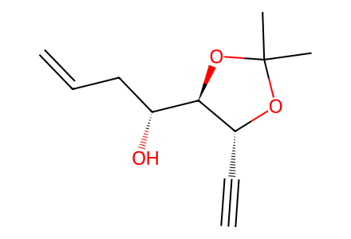
C#C[C@H]1OC(C)(C)O[C@@H]1[C@H](O)CC=C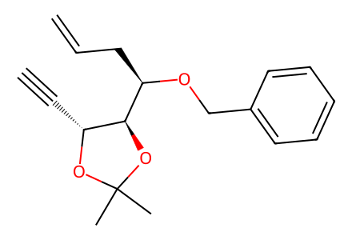
C#C[C@H]1OC(C)(C)O[C@@H]1[C@@H](CC=C)OCc1ccccc1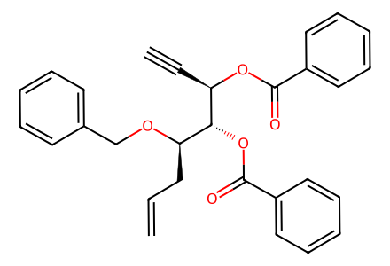
C#C[C@@H](OC(=O)c1ccccc1)[C@H](OC(=O)c1ccccc1)[C@@H](CC=C)OCc1ccccc1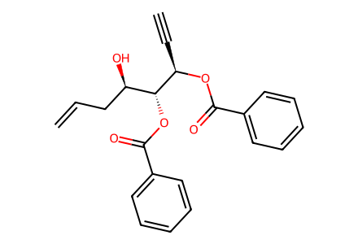
C#C[C@@H](OC(=O)c1ccccc1)[C@H](OC(=O)c1ccccc1)[C@H](O)CC=C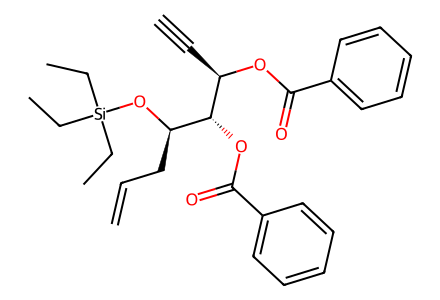
C#C[C@@H](OC(=O)c1ccccc1)[C@H](OC(=O)c1ccccc1)[C@@H](CC=C)O[Si](CC)(CC)CC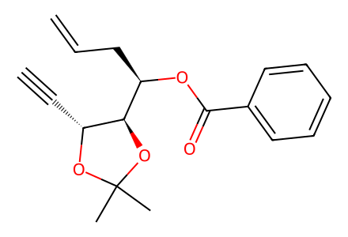
C#C[C@H]1OC(C)(C)O[C@@H]1[C@@H](CC=C)OC(=O)c1ccccc1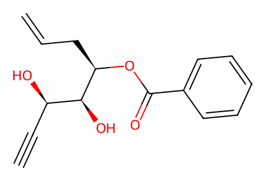
C#C[C@@H](O)[C@H](O)[C@@H](CC=C)OC(=O)c1ccccc1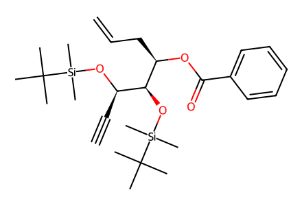
C#C[C@@H](O[Si](C)(C)C(C)(C)C)[C@H](O[Si](C)(C)C(C)(C)C)[C@@H](CC=C)OC(=O)c1ccccc1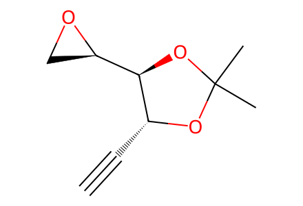
C#C[C@H]1OC(C)(C)O[C@@H]1[C@H]1CO1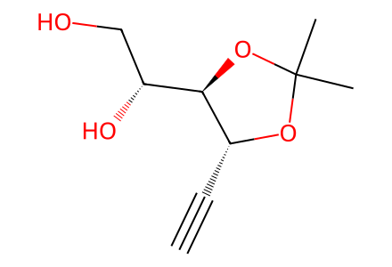
C#C[C@H]1OC(C)(C)O[C@@H]1[C@H](O)CO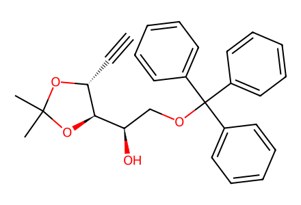
C#C[C@H]1OC(C)(C)O[C@@H]1[C@H](O)COC(c1ccccc1)(c1ccccc1)c1ccccc1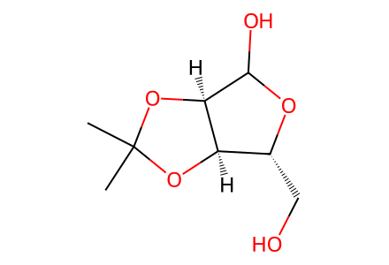
CC1(C)O[C@@H]2[C@@H](CO)OC(O)[C@@H]2O1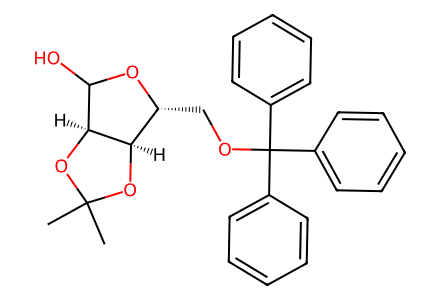
CC1(C)O[C@@H]2[C@@H](COC(c3ccccc3)(c3ccccc3)c3ccccc3)OC(O)[C@@H]2O1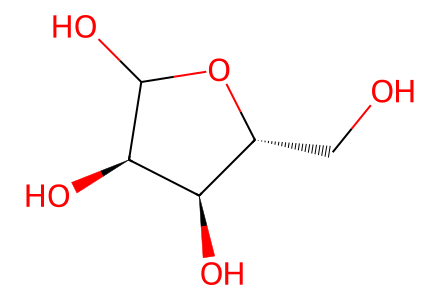
OC[C@H]1OC(O)[C@H](O)[C@@H]1O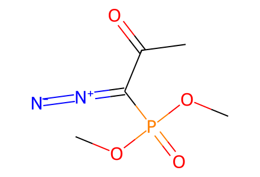
COP(=O)(OC)C(=[N+]=[N-])C(C)=O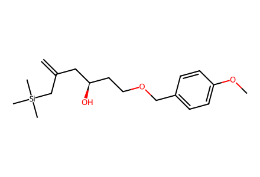
C=C(C[C@H](O)CCOCc1ccc(OC)cc1)C[Si](C)(C)C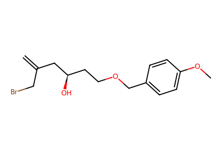
C=C(CBr)C[C@H](O)CCOCc1ccc(OC)cc1
COc1ccc(COCC[C@@H]2CO2)cc1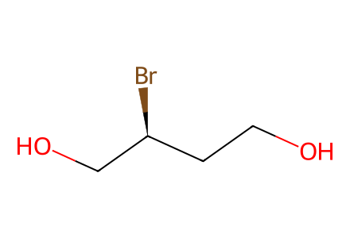
OCC[C@H](Br)CO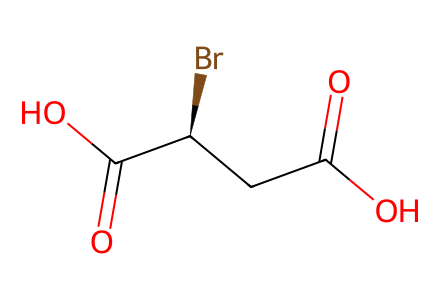
O=C(O)C[C@H](Br)C(=O)O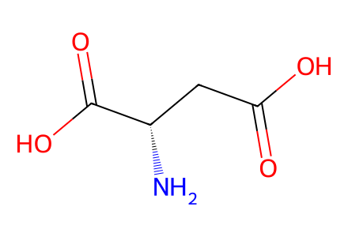
N[C@@H](CC(=O)O)C(=O)O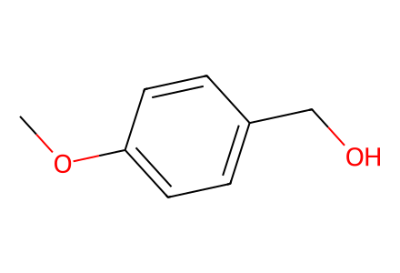
COc1ccc(CO)cc1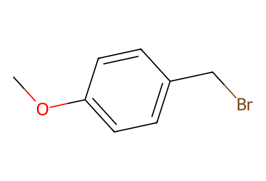
COc1ccc(CBr)cc1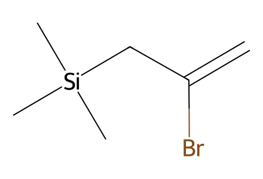
C=C(Br)C[Si](C)(C)C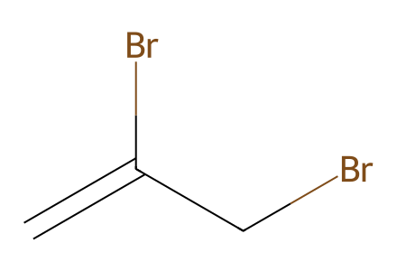
C=C(Br)CBr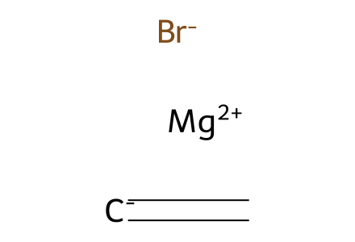
[Br-].[CH-]=C.[Mg+2]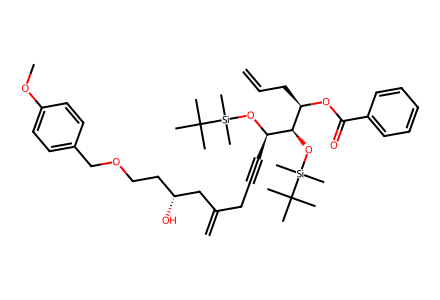
C=CC[C@@H](OC(=O)c1ccccc1)[C@@H](O[Si](C)(C)C(C)(C)C)[C@@H](C#CCC(=C)C[C@H](O)CCOCc1ccc(OC)cc1)O[Si](C)(C)C(C)(C)C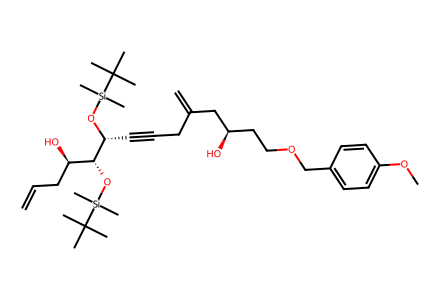
C=CC[C@@H](O)[C@@H](O[Si](C)(C)C(C)(C)C)[C@@H](C#CCC(=C)C[C@H](O)CCOCc1ccc(OC)cc1)O[Si](C)(C)C(C)(C)C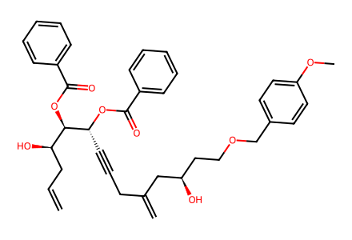
C=CC[C@@H](O)[C@@H](OC(=O)c1ccccc1)[C@@H](C#CCC(=C)C[C@H](O)CCOCc1ccc(OC)cc1)OC(=O)c1ccccc1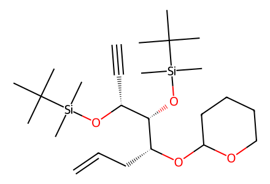
C#C[C@@H](O[Si](C)(C)C(C)(C)C)[C@H](O[Si](C)(C)C(C)(C)C)[C@@H](CC=C)OC1CCCCO1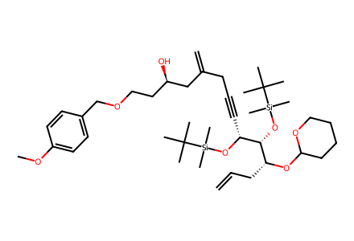
C=CC[C@@H](OC1CCCCO1)[C@@H](O[Si](C)(C)C(C)(C)C)[C@@H](C#CCC(=C)C[C@H](O)CCOCc1ccc(OC)cc1)O[Si](C)(C)C(C)(C)CC=CC[C@H]1O[C@@]2(CC(=C)C[C@@H](CCOCc3ccc(OC)cc3)O2)C[C@@H](OC(=O)c2ccccc2)[C@@H]1OC(=O)c1ccccc1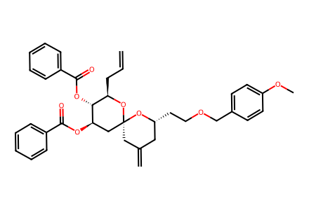
C=CC[C@H]1O[C@]2(CC(=C)C[C@@H](CCOCc3ccc(OC)cc3)O2)C[C@@H](OC(=O)c2ccccc2)[C@@H]1OC(=O)c1ccccc1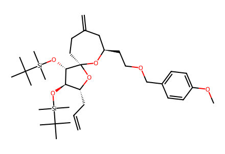
C=CC[C@H]1O[C@@]2(CCC(=C)C[C@@H](CCOCc3ccc(OC)cc3)O2)[C@@H](O[Si](C)(C)C(C)(C)C)[C@@H]1O[Si](C)(C)C(C)(C)C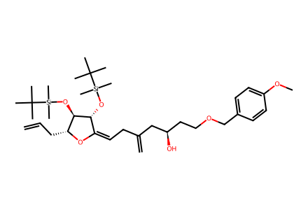
C=CC[C@H]1OC(=CCC(=C)C[C@H](O)CCOCc2ccc(OC)cc2)[C@@H](O[Si](C)(C)C(C)(C)C)[C@@H]1O[Si](C)(C)C(C)(C)C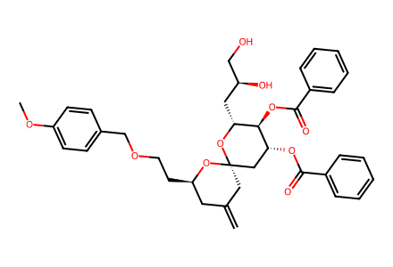
C=C1C[C@@H](CCOCc2ccc(OC)cc2)O[C@]2(C1)C[C@@H](OC(=O)c1ccccc1)[C@H](OC(=O)c1ccccc1)[C@@H](C[C@H](O)CO)O2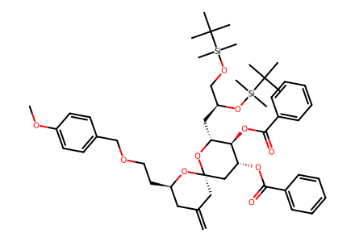
C=C1C[C@@H](CCOCc2ccc(OC)cc2)O[C@]2(C1)C[C@@H](OC(=O)c1ccccc1)[C@H](OC(=O)c1ccccc1)[C@@H](C[C@@H](CO[Si](C)(C)C(C)(C)C)O[Si](C)(C)C(C)(C)C)O2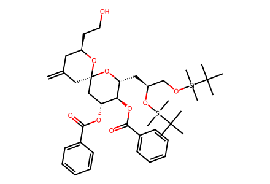
C=C1C[C@@H](CCO)O[C@]2(C1)C[C@@H](OC(=O)c1ccccc1)[C@H](OC(=O)c1ccccc1)[C@@H](C[C@@H](CO[Si](C)(C)C(C)(C)C)O[Si](C)(C)C(C)(C)C)O2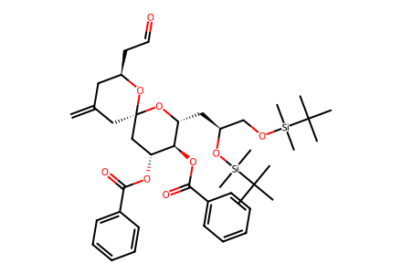
C=C1C[C@@H](CC=O)O[C@]2(C1)C[C@@H](OC(=O)c1ccccc1)[C@H](OC(=O)c1ccccc1)[C@@H](C[C@@H](CO[Si](C)(C)C(C)(C)C)O[Si](C)(C)C(C)(C)C)O2
C=C1C[C@@H](C[C@@H](O)C/C=[CH]/[Sn]([CH2]CCC)([CH2]CCC)[CH2]CCC)O[C@]2(C1)C[C@@H](OC(=O)c1ccccc1)[C@H](OC(=O)c1ccccc1)[C@@H](C[C@@H](CO[Si](C)(C)C(C)(C)C)O[Si](C)(C)C(C)(C)C)O2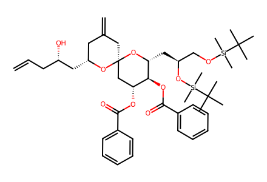
C=CC[C@H](O)C[C@@H]1CC(=C)C[C@]2(C[C@@H](OC(=O)c3ccccc3)[C@H](OC(=O)c3ccccc3)[C@@H](C[C@@H](CO[Si](C)(C)C(C)(C)C)O[Si](C)(C)C(C)(C)C)O2)O1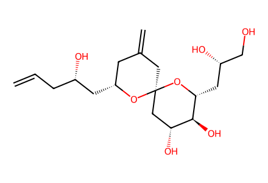
C=CC[C@H](O)C[C@@H]1CC(=C)C[C@]2(C[C@@H](O)[C@H](O)[C@@H](C[C@H](O)CO)O2)O1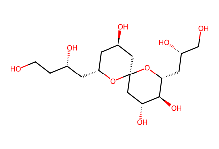
OCC[C@H](O)C[C@@H]1C[C@@H](O)C[C@]2(C[C@@H](O)[C@H](O)[C@@H](C[C@H](O)CO)O2)O1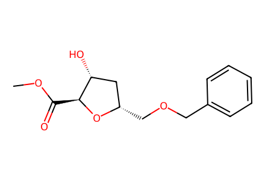
COC(=O)[C@@H]1O[C@@H](COCc2ccccc2)C[C@H]1O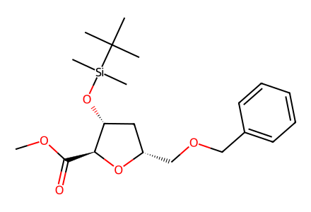
COC(=O)[C@@H]1O[C@@H](COCc2ccccc2)C[C@H]1O[Si](C)(C)C(C)(C)C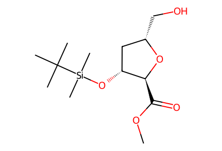
COC(=O)[C@@H]1O[C@@H](CO)C[C@H]1O[Si](C)(C)C(C)(C)C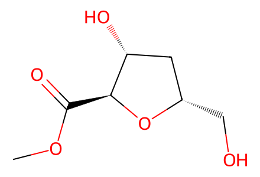
COC(=O)[C@@H]1O[C@@H](CO)C[C@H]1O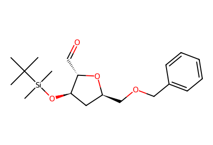
CC(C)(C)[Si](C)(C)O[C@@H]1C[C@H](COCc2ccccc2)O[C@H]1C=O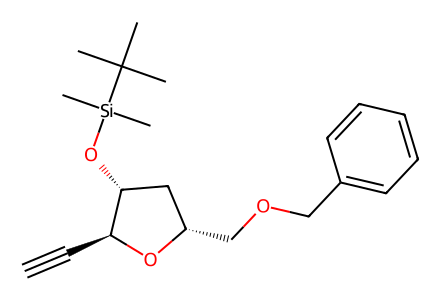
C#C[C@@H]1O[C@@H](COCc2ccccc2)C[C@H]1O[Si](C)(C)C(C)(C)C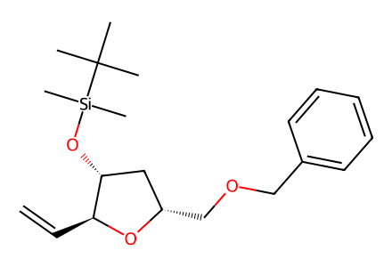
C=C[C@@H]1O[C@@H](COCc2ccccc2)C[C@H]1O[Si](C)(C)C(C)(C)C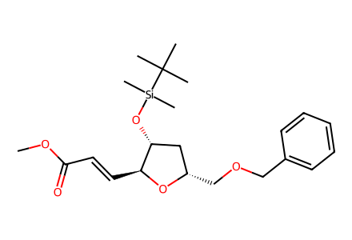
COC(=O)/C=C/[C@@H]1O[C@@H](COCc2ccccc2)C[C@H]1O[Si](C)(C)C(C)(C)C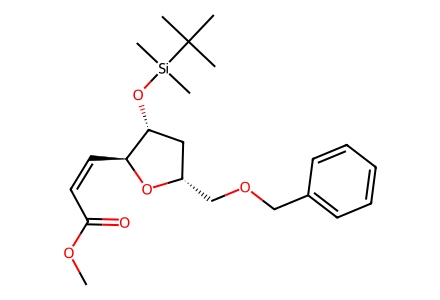
COC(=O)/C=C\[C@@H]1O[C@@H](COCc2ccccc2)C[C@H]1O[Si](C)(C)C(C)(C)CCOC(=O)CC[C@@H]1O[C@@H](CO)C[C@H]1O[Si](C)(C)C(C)(C)CCOC(=O)CC[C@@H]1O[C@@H](C=O)C[C@H]1O[Si](C)(C)C(C)(C)CCOC(=O)CC[C@@H]1O[C@@H](/C=C\I)C[C@H]1O[Si](C)(C)C(C)(C)CCOC(=O)CC[C@@H]1O[C@@H](/C=C\C#C[C@@H]2O[C@@H](COCc3ccccc3)C[C@H]2O[Si](C)(C)C(C)(C)C)C[C@H]1O[Si](C)(C)C(C)(C)CCOC(=O)CC[C@@H]1O[C@@H](/C=C\CC[C@@H]2O[C@@H](COCc3ccccc3)C[C@H]2O[Si](C)(C)C(C)(C)C)C[C@H]1O[Si](C)(C)C(C)(C)CCOC(=O)CC[C@@H]1O[C@@H](CCCC[C@@H]2O[C@@H](COCc3ccccc3)C[C@H]2O[Si](C)(C)C(C)(C)C)C[C@H]1O[Si](C)(C)C(C)(C)CCOC(=O)CC[C@@H]1O[C@@H](CCCC[C@@H]2O[C@@H](CO)C[C@H]2O[Si](C)(C)C(C)(C)C)C[C@H]1O[Si](C)(C)C(C)(C)CCOC(=O)CC[C@H](O[Si](C)(C)C(C)(C)C)[C@@H](CCCCCC[C@@H]1O[C@@H](CO[Si](C)(C)C(C)(C)C)C[C@H]1O[Si](C)(C)C(C)(C)C)O[Si](C)(C)C(C)(C)CCOC(=O)CC[C@@H]1O[C@@H](CCCC[C@@H]2O[C@@H](COS(C)(=O)=O)C[C@H]2O[Si](C)(C)C(C)(C)C)C[C@H]1O[Si](C)(C)C(C)(C)CCOC(=O)CC[C@@H]1O[C@@H](CCCC[C@@H]2O[C@@H](CN=[N+]=[N-])C[C@H]2O[Si](C)(C)C(C)(C)C)C[C@H]1O[Si](C)(C)C(C)(C)CCOC(=O)[C@H](O)[C@H](O)C[C@@H](COCc1ccccc1)OS(C)(=O)=OCOC(=O)/C=C/C[C@@H](COCc1ccccc1)OS(C)(=O)=OCOC(=O)/C=C/C[C@H](O)COCc1ccccc1C=CC[C@H](O)COCc1ccccc1c1ccc(COC[C@H]2CO2)cc1COC(=O)CC[C@@H]1O[C@@H](CCCC[C@@H]2O[C@@H](CNC(C)=O)C[C@H]2O[Si](C)(C)C(C)(C)C)C[C@H]1O[Si](C)(C)C(C)(C)CCOC(=O)CC[C@@H]1O[C@@H](CCCC[C@@H]2O[C@@H](CN(N=O)C(C)=O)C[C@H]2O[Si](C)(C)C(C)(C)C)C[C@H]1O[Si](C)(C)C(C)(C)CCC(C)(C)[Si](C)(C)O[C@@H]1C[C@H](COCc2ccccc2)O[C@H]1/C=C\IC=C[C@H]1C[C@@H](O[Si](C)(C)C(C)(C)C)[C@H](CCC(=O)OC)O1COC(=O)CC[C@@H]1O[C@@H](CC/C=C\[C@@H]2O[C@@H](COCc3ccccc3)C[C@H]2O[Si](C)(C)C(C)(C)C)C[C@H]1O[Si](C)(C)C(C)(C)CCOC(=O)[C@@H]1C[C@@H](O[Si](C)(C)C(C)(C)C)[C@H](O[Si](C)(C)C(C)(C)C)[C@@H](CO)O1CC(C)(C)[Si](C)(C)OC[C@H]1OC(Cl)C[C@@H](O[Si](C)(C)C(C)(C)C)[C@@H]1O[Si](C)(C)C(C)(C)CCC(C)(C)[Si](C)(C)OC[C@H]1OC=C[C@@H](O[Si](C)(C)C(C)(C)C)[C@@H]1O[Si](C)(C)C(C)(C)CCC(=O)OC[C@H]1OC=C[C@@H](OC(C)=O)[C@@H]1OC(C)=OC=CCOCOCC=CCO
COCClCOC(=O)C#NCOC(=O)[C@@H]1C[C@@H](O[Si](C)(C)C(C)(C)C)[C@H](O[Si](C)(C)C(C)(C)C)[C@@H](C=O)O1C=C[C@H](OCOC)[C@@H](O)[C@H]1O[C@H](C(=O)OC)C[C@@H](O[Si](C)(C)C(C)(C)C)[C@@H]1O[Si](C)(C)C(C)(C)CC=C[C@H](OCOC)[C@@H](O)[C@H]1O[C@H](C(=O)OC)C[C@@H](O)[C@@H]1OC=C[C@H](O)[C@@H](O)[C@H]1O[C@H](C(=O)OC)C[C@@H](O[Si](C)(C)C(C)(C)C)[C@@H]1O[Si](C)(C)C(C)(C)CC=C[C@H](O[Si](C)(C)C(C)(C)C)[C@@H](O[Si](C)(C)C(C)(C)C)[C@H]1O[C@H](C(=O)OC)C[C@@H](O[Si](C)(C)C(C)(C)C)[C@@H]1O[Si](C)(C)C(C)(C)CC=C[C@@H]1OC(C)(C)O[C@H]1[C@H]1O[C@H](C(=O)OC)C[C@@H](O[Si](C)(C)C(C)(C)C)[C@@H]1O[Si](C)(C)C(C)(C)CC=C[C@H](OCOC)[C@H]1O[C@@H](c2ccc(OC)cc2)O[C@@H]2[C@@H]1O[C@H](C(=O)OC)C[C@H]2OC=C[C@H](O[Si](C)(C)C(C)(C)C)[C@@H](O[Si](C)(C)C(C)(C)C)[C@H]1O[C@H](C=O)C[C@@H](O[Si](C)(C)C(C)(C)C)[C@@H]1O[Si](C)(C)C(C)(C)CCOC(=O)CC[C@@H]1O[C@@H](CCCC[C@@H]2O[C@@H](C=[N+]=[N-])C[C@H]2O[Si](C)(C)C(C)(C)C)C[C@H]1O[Si](C)(C)C(C)(C)CC=C[C@H](O[Si](C)(C)C(C)(C)C)[C@@H](O[Si](C)(C)C(C)(C)C)[C@H]1O[C@H](C(=O)C[C@H]2C[C@@H](O[Si](C)(C)C(C)(C)C)[C@H](CCCC[C@H]3C[C@@H](O[Si](C)(C)C(C)(C)C)[C@H](CCC(=O)OC)O3)O2)C[C@@H](O[Si](C)(C)C(C)(C)C)[C@@H]1O[Si](C)(C)C(C)(C)CC=C[C@H](O[Si](C)(C)C(C)(C)C)[C@@H](O[Si](C)(C)C(C)(C)C)[C@H]1O[C@H]([C@@H](O)C[C@H]2C[C@@H](O[Si](C)(C)C(C)(C)C)[C@H](CCCC[C@H]3C[C@@H](O[Si](C)(C)C(C)(C)C)[C@H](CCC(=O)OC)O3)O2)C[C@@H](O[Si](C)(C)C(C)(C)C)[C@@H]1O[Si](C)(C)C(C)(C)CC=C[C@H](O[Si](C)(C)C(C)(C)C)[C@@H](O[Si](C)(C)C(C)(C)C)[C@H]1O[C@H]([C@H](O)C[C@H]2C[C@@H](O[Si](C)(C)C(C)(C)C)[C@H](CCCC[C@H]3C[C@@H](O[Si](C)(C)C(C)(C)C)[C@H](CCC(=O)OC)O3)O2)C[C@@H](O[Si](C)(C)C(C)(C)C)[C@@H]1O[Si](C)(C)C(C)(C)CC=C[C@H](O)[C@@H](O)[C@H]1O[C@H]([C@@H](O)C[C@H]2C[C@@H](O)[C@H](CCCC[C@H]3C[C@@H](O)[C@H](CCCO)O3)O2)C[C@@H](O)[C@@H]1OC=C[C@H](O)[C@@H](O)[C@H]1O[C@H]([C@H](O)C[C@H]2C[C@@H](O)[C@H](CCCC[C@H]3C[C@@H](O)[C@H](CCCO)O3)O2)C[C@@H](O)[C@@H]1OC=C[C@H](OCOC)C(=O)[C@H]1O[C@H](C(=O)OC)C[C@@H](O[Si](C)(C)C(C)(C)C)[C@@H]1O[Si](C)(C)C(C)(C)CC=C[C@H](OCOC)[C@H](O)[C@H]1O[C@H](C(=O)OC)C[C@@H](O[Si](C)(C)C(C)(C)C)[C@@H]1O[Si](C)(C)C(C)(C)CC=C[C@H](O)[C@H](O)[C@H]1O[C@H](C(=O)OC)C[C@@H](O[Si](C)(C)C(C)(C)C)[C@@H]1O[Si](C)(C)C(C)(C)CC=C[C@H](O[Si](C)(C)C(C)(C)C)[C@H](O[Si](C)(C)C(C)(C)C)[C@H]1O[C@H](C(=O)OC)C[C@@H](O[Si](C)(C)C(C)(C)C)[C@@H]1O[Si](C)(C)C(C)(C)CC=C[C@H](O[Si](C)(C)C(C)(C)C)[C@H](O[Si](C)(C)C(C)(C)C)[C@H]1O[C@H](C=O)C[C@@H](O[Si](C)(C)C(C)(C)C)[C@@H]1O[Si](C)(C)C(C)(C)CC=C[C@H](O[Si](C)(C)C(C)(C)C)[C@H](O[Si](C)(C)C(C)(C)C)[C@H]1O[C@H](C(=O)C[C@H]2C[C@@H](O[Si](C)(C)C(C)(C)C)[C@H](CCCC[C@H]3C[C@@H](O[Si](C)(C)C(C)(C)C)[C@H](CCC(=O)OC)O3)O2)C[C@@H](O[Si](C)(C)C(C)(C)C)[C@@H]1O[Si](C)(C)C(C)(C)CC=C[C@H](O[Si](C)(C)C(C)(C)C)[C@H](O[Si](C)(C)C(C)(C)C)[C@H]1O[C@H]([C@@H](O)C[C@H]2C[C@@H](O[Si](C)(C)C(C)(C)C)[C@H](CCCC[C@H]3C[C@@H](O[Si](C)(C)C(C)(C)C)[C@H](CCC(=O)OC)O3)O2)C[C@@H](O[Si](C)(C)C(C)(C)C)[C@@H]1O[Si](C)(C)C(C)(C)CC=C[C@H](O)[C@H](O)[C@H]1O[C@H]([C@@H](O)C[C@H]2C[C@@H](O)[C@H](CCCC[C@H]3C[C@@H](O)[C@H](CCCO)O3)O2)C[C@@H](O)[C@@H]1OC=C[C@H](O)[C@@H](O)[C@H]1O[C@H](CO)C[C@@H](O)[C@@H]1OC=C[C@H](O)[C@H](O)[C@H]1O[C@H](CO)C[C@@H](O)[C@@H]1OC=C1C[C@@H](CCOCc2ccc(OC)cc2)O[C@]2(C1)C[C@@H](OC(=O)c1ccccc1)[C@H](OC(=O)c1ccccc1)[C@@H](C[C@@H](COC(=O)[C@](OC)(c1ccccc1)C(F)(F)F)OC(=O)[C@](OC)(c1ccccc1)C(F)(F)F)O2C=C1C[C@@H](CCOCc2ccc(OC)cc2)O[C@]2(C1)C[C@@H](OC(=O)c1ccccc1)[C@H](OC(=O)c1ccccc1)[C@@H](C[C@@H](COC(=O)[C@@](OC)(c1ccccc1)C(F)(F)F)OC(=O)[C@@](OC)(c1ccccc1)C(F)(F)F)O2C=C1C[C@@H](C[C@H](C/C=[CH]/[Sn]([CH2]CCC)([CH2]CCC)[CH2]CCC)OC(=O)[C@](OC)(c2ccccc2)C(F)(F)F)O[C@]2(C1)C[C@@H](OC(=O)c1ccccc1)[C@H](OC(=O)c1ccccc1)[C@@H](C[C@@H](CO[Si](C)(C)C(C)(C)C)O[Si](C)(C)C(C)(C)C)O2C=C1C[C@@H](C[C@H](C/C=[CH]/[Sn]([CH2]CCC)([CH2]CCC)[CH2]CCC)OC(=O)[C@@](OC)(c2ccccc2)C(F)(F)F)O[C@]2(C1)C[C@@H](OC(=O)c1ccccc1)[C@H](OC(=O)c1ccccc1)[C@@H](C[C@@H](CO[Si](C)(C)C(C)(C)C)O[Si](C)(C)C(C)(C)C)O2COC(=O)[C@@H]1O[C@@H](COCc2ccccc2)C[C@H]1OC(=O)[C@](OC)(c1ccccc1)C(F)(F)FCOC(=O)[C@@H]1O[C@@H](COCc2ccccc2)C[C@H]1OC(=O)[C@@](OC)(c1ccccc1)C(F)(F)FC=C[C@H](OC(=O)[C@](OC)(c1ccccc1)C(F)(F)F)[C@@H](O)[C@H]1O[C@H](C(=O)OC)C[C@@H](O[Si](C)(C)C(C)(C)C)[C@@H]1O[Si](C)(C)C(C)(C)CC=C[C@H](OC(=O)[C@@](OC)(c1ccccc1)C(F)(F)F)[C@@H](O)[C@H]1O[C@H](C(=O)OC)C[C@@H](O[Si](C)(C)C(C)(C)C)[C@@H]1O[Si](C)(C)C(C)(C)CC=C[C@H](O[Si](C)(C)C(C)(C)C)[C@@H](O[Si](C)(C)C(C)(C)C)[C@H]1O[C@H]([C@H](C[C@H]2C[C@@H](O[Si](C)(C)C(C)(C)C)[C@H](CCCC[C@H]3C[C@@H](O[Si](C)(C)C(C)(C)C)[C@H](CCC(=O)OC)O3)O2)OC(=O)[C@](OC)(c2ccccc2)C(F)(F)F)C[C@@H](O[Si](C)(C)C(C)(C)C)[C@@H]1O[Si](C)(C)C(C)(C)CC=C[C@H](O[Si](C)(C)C(C)(C)C)[C@@H](O[Si](C)(C)C(C)(C)C)[C@H]1O[C@H]([C@H](C[C@H]2C[C@@H](O[Si](C)(C)C(C)(C)C)[C@H](CCCC[C@H]3C[C@@H](O[Si](C)(C)C(C)(C)C)[C@H](CCC(=O)OC)O3)O2)OC(=O)[C@@](OC)(c2ccccc2)C(F)(F)F)C[C@@H](O[Si](C)(C)C(C)(C)C)[C@@H]1O[Si](C)(C)C(C)(C)CC=C[C@H](O[Si](C)(C)C(C)(C)C)[C@@H](O[Si](C)(C)C(C)(C)C)[C@H]1O[C@H]([C@@H](C[C@H]2C[C@@H](O[Si](C)(C)C(C)(C)C)[C@H](CCCC[C@H]3C[C@@H](O[Si](C)(C)C(C)(C)C)[C@H](CCC(=O)OC)O3)O2)OC(=O)[C@](OC)(c2ccccc2)C(F)(F)F)C[C@@H](O[Si](C)(C)C(C)(C)C)[C@@H]1O[Si](C)(C)C(C)(C)CC=C[C@H](O[Si](C)(C)C(C)(C)C)[C@@H](O[Si](C)(C)C(C)(C)C)[C@H]1O[C@H]([C@@H](C[C@H]2C[C@@H](O[Si](C)(C)C(C)(C)C)[C@H](CCCC[C@H]3C[C@@H](O[Si](C)(C)C(C)(C)C)[C@H](CCC(=O)OC)O3)O2)OC(=O)[C@@](OC)(c2ccccc2)C(F)(F)F)C[C@@H](O[Si](C)(C)C(C)(C)C)[C@@H]1O[Si](C)(C)C(C)(C)CC=C=[CH][Sn]([CH2]CCC)([CH2]CCC)[CH2]CCCC=[C-]C[Si](C)(C)C.[Br-].[Mg+2]C=CC(=O)OCCOC(=O)C=P(c1ccccc1)(c1ccccc1)c1ccccc1C=P(c1ccccc1)(c1ccccc1)c1ccccc1IC[P+](c1ccccc1)(c1ccccc1)c1ccccc1.[I-]
BrCc1ccccc1ClC(c1ccccc1)(c1ccccc1)c1ccccc1
O=C(Cl)c1ccccc1